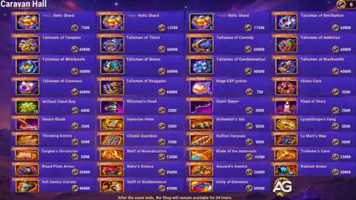
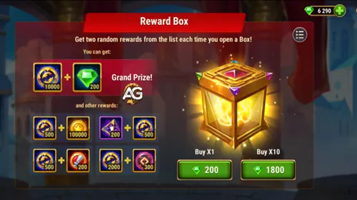

The Caravan Hall is the Trade Routes event shop. During the season featuring the new Titan Metida, its main exclusive rewards are Folio Relic Shards and a rotating selection of Talismans. These premium items should come before ordinary hero equipment for most players.
Important: the Shop Changes Every Season
The featured hero Relic and the Talismans offered in Caravan Hall rotate with each Trade Routes season. This guide covers the lineup for the Metida Titan season. Always check the current shop before copying a strategy from an older season.

Alexandre's Quick Buying Strategy
- Choose your main-team upgrade: Folio's Level 1 Relic costs 105,000 Sigils, almost the price of two 60,000-Sigil Talismans. His shards can also be earned gradually for free through daily Guild vs. missions.
- F2P players chasing the Relic: the full shop route costs 105,000 Exchange Sigils, so complete every mission and use saved free Emeralds on Reward Boxes only if the remaining gap is realistic.
- Low spenders: combine the first 30 Folio shards with the 20-shard Hub offer instead of paying the expensive second and repeatable Caravan Hall rates.
- Choose one relevant Talisman: buy for a hero in your main team, not simply because the item is exclusive.
- Avoid hero equipment: spend Energy to farm gear and keep Exchange Sigils for Relics and Talismans.
Folio Relic: How to Reach 50 Shards
You need 50 Folio Relic Shards to unlock Relic Level 1, and Folio must be at least four stars. For another hero Relic example, see the Iris guide. Caravan Hall sells five shards per purchase, but the cost rises after the limited discounted offers are exhausted.
The Third Offer Is Repeatable
The final Folio offer has no stated purchase limit. Each purchase costs 17,500 Exchange Sigils and gives 5 Folio Relic Shards, so two purchases complete the shop-only 50-shard route.
| Offer Tier | Cost per Purchase | Shards | Purchase Limit | Tier Total | Cumulative Total |
|---|---|---|---|---|---|
| First offer | 7,500 Exchange Sigils | 5 | 6/6 | 45,000 Sigils for 30 shards | 30 shards |
| Second offer | 12,500 Exchange Sigils | 5 | 2/2 | 25,000 Sigils for 10 shards | 40 shards for 70,000 Sigils |
| Third offer | 17,500 Exchange Sigils | 5 | Blank (repeatable; no stated limit) | Two purchases cost 35,000 Sigils for 10 shards | 50 shards for 105,000 Sigils |
The shop-only route requires all six first-tier purchases, both second-tier purchases, and two repeatable purchases: 45,000 + 25,000 + 35,000 = 105,000 Exchange Sigils.
F2P Route
Folio's Relic is technically obtainable without spending because the third offer is repeatable. In practice, however, 105,000 Exchange Sigils is a major currency wall. A F2P player must complete the available missions, collect extra Sigils, and usually spend a substantial amount of saved free Emeralds on Reward Boxes to reach 50 shards. Check your remaining gap before committing Emeralds; stopping short of 50 shards does not unlock Relic Level 1.
Best Low-Spender Route
Buy all six 7,500-Sigil offers for 30 Folio Relic Shards, spending 45,000 Exchange Sigils. Then buy the 20-shard Folio bundle in the Hub shop to reach the required 50. This avoids the poor-value 12,500 and 17,500 tiers and leaves more Exchange Sigils available for a Talisman. For most low spenders, this is the strongest balance between event currency and real-money spending.
Unlocking Is Not the Same as Fully Upgrading
The 50-shard target opens Folio's first Relic level. Before spending, confirm that Folio has four stars and that you actively use him. Otherwise, a Talisman for a core hero may improve your account sooner.
Folio's Relic vs. a Second Talisman
Folio is an excellent hero, but you can collect his Relic Shards gradually for free by completing daily Guild vs. missions. The full Caravan Hall unlock costs 105,000 Exchange Sigils, almost as much as two Talismans at 60,000 Sigils each.
My advice is to weigh that free progression against an exclusive second Talisman for your main team. If you decide to rush Folio's Relic, the discounted 30-shard tier plus 20 shards from the Hub is my preferred low-spender route.
How to Earn More Exchange Sigils
During the first days of the event, complete Brawl battles to earn extra Exchange Sigils alongside the regular event missions. If you have saved free Emeralds from 4x reward tasks, plan how many you can put toward Reward Boxes and their event mission.
Trade Routes missions provide Exchange Sigils, but they do not normally give enough currency to buy several premium shop items. Complete the missions first, then use these extra sources if you need to close the gap:
- Grand Caravan: its updated mission chains provide extra Exchange Sigils, Season Points, and account resources.
- Reward Boxes: the largest repeatable source of additional Exchange Sigils, but they require Emeralds and contain random rewards.
- Event and Hub offers: compare them with the next Caravan Hall price tier before buying more Relic Shards.
Roads Unlocked and Grand Caravan Bonus Rewards
These missions offer extra Exchange Sigils, Season Points, and other rewards alongside permanent upgrades. Plan your targets with the Roads Unlocked guide and the Grand Caravan guide.
| Event / Mission | Requirement | Featured Reward |
|---|---|---|
| Roads Unlocked — Bountiful Roads | Complete 130 event missions | Chabba's Demonic Skin: +7,095 Physical Attack |
| Grand Caravan — Bountiful Roads | Complete 42 event missions | Mushy and Shroom's Demonic Skin: +10,650 Armor |
| Grand Caravan — Bountiful Roads | Complete 60 event missions | Cornelius's Stellar Skin: +106,645 Health |
| VIP mission | Earn 25,000 VIP Points through purchases | Luther's second Talisman, Talisman of Purification: Physical Attack and Toughness |
| Grand Caravan — Wise Exchange | Spend 80,000 Emeralds | Alecto's Primordial Skin |
| Grand Caravan — Wise Exchange | Spend 100,000 Emeralds | Cornelius's second Talisman, Talisman of Mentor: Health and Armor Penetration |
In my opinion, Talisman of Mentor is Cornelius's best Talisman: Armor Penetration helps his ultimate deal more damage, while Health improves his survival.
Check the Alexandre Games calendar for Outland Chest, Elemental Sphere, Artifact Chest, and Emerald promotions to help complete event missions.
Are Trade Routes Reward Boxes Worth It?
A Reward Box costs 200 Emeralds, while a pack of ten costs 1,800 Emeralds. The 10-pack saves 200 Emeralds compared with ten single openings, so it is the better rate whenever you plan to open ten. Reward Boxes are where you can obtain the most extra Exchange Sigils during the event, but the cost is high and the contents are random.

Set Your Target Before Opening Boxes
Calculate exactly how many Sigils you still need for your chosen Relic or Talisman. Do not spend Emeralds chasing several shop items at once. For most players, one meaningful permanent upgrade is a better event result than a collection of unfinished purchases.
Talisman Priorities for the Metida Season
All Talismans in this Caravan Hall rotation are bought with Exchange Sigils, and each featured Talisman costs 60,000 Exchange Sigils. Most are strong options for their heroes, but your real priority depends on the teams you use. A great Talisman for a benched hero is still a poor purchase.
Why These Talismans Matter
These second Talismans are exclusive to this season's Caravan Hall lineup; a future Trade Routes season can feature different Relics and Talismans. Many second Talismans are the best overall choice for their heroes and were originally released through VIP or expensive offers, sometimes around US$120 or more. Spending saved Emeralds to secure one useful second Talisman here can therefore be good value, but only when it directly improves a team you play.
My priority order this season: Guus, Soleil, Somna, Tristan, then Octavia. Artemis and Qing Mao are medium priorities. I would avoid Galahad, Helios, Ginger, and Markus for now because they are outside my current meta priorities; their future Relic skills may change that. Event missions provide limited Sigils, so choose for your main team.
Guus: First or Second Talisman?
Guus's second Talisman costs 60,000 Exchange Sigils and provides Armor and Physical Attack. In my opinion, his first Talisman is better once his Relic reaches Level 20, or at least Level 10. The second Talisman is a defensive alternative, especially against teams focused entirely on physical damage, where its extra Armor can help.
View the Complete Guide to All Talismans
| Talisman | Main Stats | Priority | Recommendation |
|---|---|---|---|
| Guus — Second Talisman | Armor and Physical Attack | High | First on my shortlist, but compare both Talismans if his Relic is already Level 10 or 20. |
| Soleil — Second Talisman | Magic Reflection and Health | High | My second priority when Soleil is part of your main team. |
| Somna — Second Talisman | Toughness and Physical Attack | High | My third priority for teams that use Somna. |
| Tristan — Second Talisman | Armor and Physical Attack | High | My fourth priority, depending on your main-team needs. |
| Octavia — Second Talisman | Toughness and Physical Attack | High | My fifth priority for a developed Octavia team. |
| Artemis — Second Talisman | Critical Hit Chance and Armor | Medium | A team-dependent purchase after your top priorities. |
| Qing Mao — Second Talisman | Health and Physical Attack | Medium | Consider it if Qing Mao is a regular member of your team. |
| Galahad — Second Talisman | Physical Attack and Armor Penetration | Low | I would avoid it for now; future Relic skills may change his place in the meta. |
| Helios — Second Talisman | Magic Critical Hit Chance and Magic Attack | Low | I would avoid it for now and reassess when his Relic skills arrive. |
| Ginger — Second Talisman | Crushing and Critical Hit Chance | Low | Outside my current meta priorities; future Relic skills may change that. |
| Markus — Second Talisman | Armor and Magic Attack | Low | Outside my current meta priorities; wait to see what his Relic adds. |
Buying Emeralds for Your Target Talisman
If you decide to buy Emeralds, wait for a 4x Emerald promotion whenever possible and check the best offers in the official Hero Wars Alliance Hub store. Use creator code ALEXANDREGAMES at checkout: it helps support Alexandre Games and does not add any cost to your purchase.
Should You Buy Hero Equipment?
My advice is to avoid all hero equipment in Caravan Hall until you already own every Folio Relic upgrade and every featured Talisman that matters to your teams. Relics and exclusive Talismans are much harder to replace.
Farm equipment with Energy instead. That Energy also gives you Gold and Hero EXP and can advance event missions, creating more total account progress from the same goal. Use Exchange Sigils on equipment only after the exclusive priorities are covered and all featured Talismans are already owned.
Final Caravan Hall Purchase Order
- Choose a useful second Talisman for your main team. My shortlist is Guus, Soleil, Somna, Tristan, and Octavia, in that order.
- If you want to accelerate Folio's Relic, buy the six discounted offers for 30 shards and 45,000 Exchange Sigils.
- Low spenders can finish with 20 Hub shards. F2P players targeting the full event unlock need 105,000 Sigils, so plan missions and Reward Boxes before spending saved Emeralds.
- Otherwise, collect Folio's shards gradually through daily Guild vs. missions and save event currency for Talismans.
- Consider medium-priority Talismans only for heroes you actually use.
- Buy hero equipment only after securing all Relics and Talismans; otherwise, farm it with Energy.